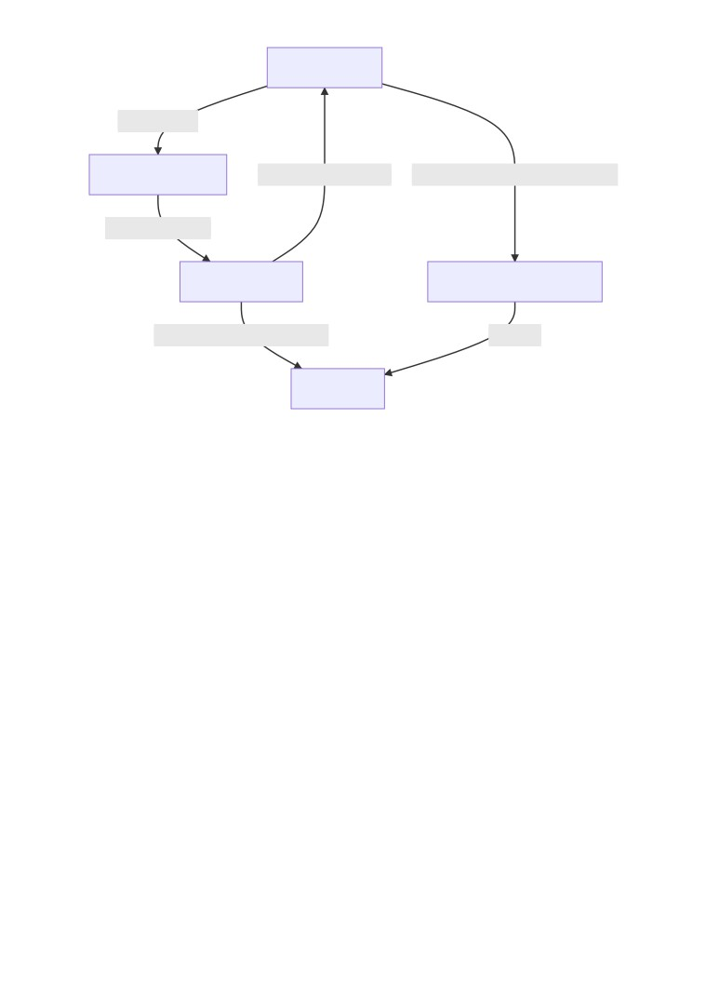
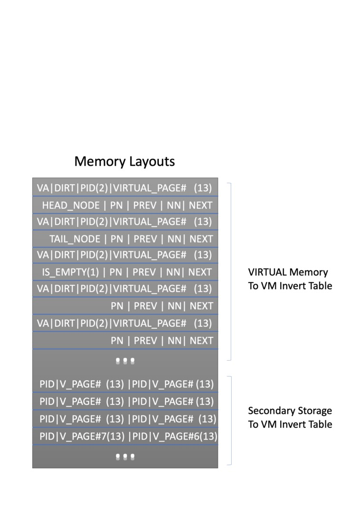
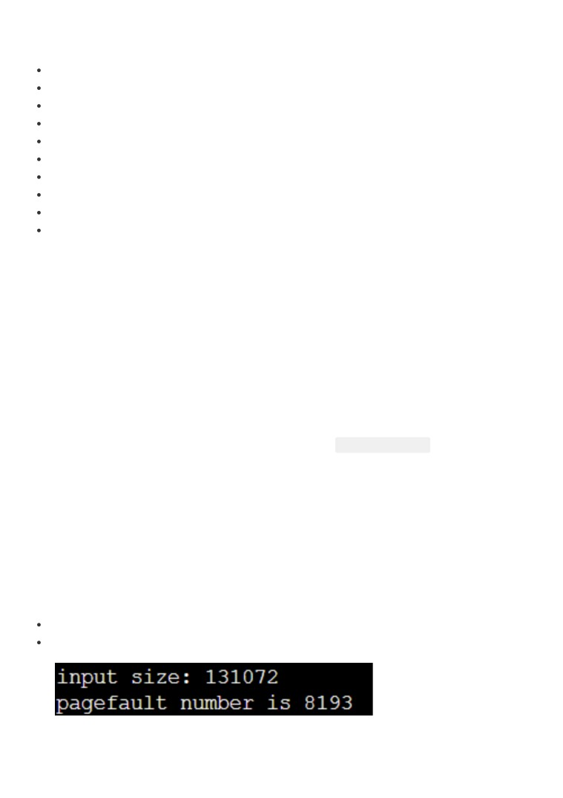

CSC 3150 Project 3 Report
Zhu Chuyan 119010486 at The Chinese University of Hong Kong, Shenzhen
Table of contents
CSC 3150 Project 3 Report
Table of contents
1. How to run the program
1.1 Running environments
1.2 Executions
Main task: Single Process VM Simulation
Bonus: Multiple Process VM Simulation
2. Implementations
2.1 Single Process VM Simulation
Inverted Tables
Table Searching
LRU Policy Implementations
Memory Layouts
2.2 Multiple Process VM Simulation
3. The results
Single Process VM Simulation
My User Program
Multiple Processes VM Simulation (bonus)
4. What I learn from the project
1. How to run the program
1.1 Running environments
Operating system: Linux
Linux distribution: CentOS Linux release 7.6.1810 (Core)
Linux kernel version: Linux version 3.10.0-957.21.3.el7.x86_64
Compiler/CUDA version: Cuda compilation tools, release 10.1, V10.1.105
1.2 Executions
Main task: Single Process VM Simulation
A Makefle has been prepared, so you can compile with the following command:
cd path_to_project/source/
make
You can then test the program by executing
./vm
Bonus: Multiple Process VM Simulation
cd path_to_project/bonus/
make
# if you wish to clean the object files:
make clean
Then you can simply run by:
./vm_bonus
2. Implementations
2.1 Single Process VM Simulation

Virtual Memory
Search Entry
P2V Inverted Table
Find VM Before Swap Search Disk Addr to Swap in/out
Index Mapped to
Physical Memory
Swap File Inverted Table
Swapped to (Based on LRU)
Do swap
2nd Storage
Figure 1: Main Program Implementation Flow Chart
Inverted Tables
First of all, we need a page table for physical memory-virtual memory mapping. Due to the limitation
of memory space, an inverted table is needed to implement.
The entry of the table is the virtual memory address (page address, page ofset excluded), and the
index of the table is the physical memory address, therefore, there will be in total 1024 entries as
there are 1024 pages in the physical memory according to the given assumption.
As the upper limit of the VM address space is 256K, larger than the secondary storage size,
therefore, I did not adopt the one-to-one mapping between the swap fle location and the VM
address, instead, another inverted table is introduced to record the relationship.
Table Searching
As yet another time-space tradeof, the inverted table requires us to search for the specifc VM
address, and it may takes time complexity of O(n), which is quite inefcient. Therefore, a hashing
method may help to improve the performance.
However, the hashing result may generate outputs confiting with the LRU policy when the page
table is full, therefore, a linear search will be adopted in my program after the table is full. Before
that, a open-addressing hashing method is used. All entries are frstly marked as invalid, and the
linear probing process will terminate whenever it encounters a invalid entry or fnds a desired entry.
LRU Policy Implementations

I implemented LRU with a doubly linked list to reduce the searching time, for each entry in the
inverted page table, there is a pointer pointing to the previous and next entries in term of latest
visiting time (like a priority queue).
Each time a memory address (physical) is accessed, the corresponding node will be moved to the
head of the linked list, a each time a victim is to be selected to evict, it will be the tail of the node.
Memory Layouts
As only 16KB memory is avaible for all tables and related records, the memory is quite compacted to
fulflls the designing ideas mentioned above, therefore, the memory layout is shown as below and
dozens of macros are written to facilitate the use.

The componenents are elaborated as follows:
VA: Valid bit
DIRT: Dirty bit
PID: the pid of the program (applicable in bonus)
Virtual Page: the corresponding virtual page number
Head_node: the head node of the linked list
Tail_node: the tail node of the linked list
PREV: Previous node in the linked list
NEXT: Next node in the linked list
PN: The previous node is null
NN: The next node is null
Note that in the Pysical-memory-to-VM inverted table, each entry occupies two 32-bit block and in
the Secondary-storage-to-VM inverted table, each entry occupies half 32-bit block.
2.2 Multiple Process VM Simulation
The multiple process simulation is done with multiple CUDA threads within a same block. It is hard
to achieve the non-preemptive priority scheduling as it is almost impossible to implement the lock
for the CUDA threads within the same block due to its wrap architecture. Therefore, the multiple
processes rather run sequentially to simulate the non-preemptive priority scheduling to avoid the
data complict in accessing the same inverted page table.
The sequantial execution is achived by leveraging the CUDA
__syncthreads() and a if condition.
What's more, the pid is added to the head of the VM address to distinguish the addresses of
diferent processes, and other implementation details stay consistent with the main part mentioned
above.
3. The results
Single Process VM Simulation
Page fault number: 8093
Screenshots of result:
Figure 1: Single Process Test Results
Analysis of the results:
First of all, we invoke 4k page write to the fle, causing 4k page faults
Then the following read function calls from 4k down will causes exactly 1 pagefaults.
Finally the vm_read() calls in the snapshot will further generates 4k pagefaults.
My User Program
For required work:
1
for (int i = 0; i < input_size; i++)
vm_write(vm, i, input[i]);
for (int i = input_size - 1; i >= input_size - 32769; i--)
int value = vm_read(vm, i);
vm_snapshot(vm, results, 0, input_size);
PF: 8193
2
for (int i = 0; i < input_size; i++)
if(i%2) vm_write(vm, i, input[i]);
for (int i = input_size - 1; i >= input_size - 32769; i--)
if(i%2) int value = vm_read(vm, i);
for (int i = 0; i < input_size; i++)
if(i%2==0) vm_write(vm, i, input[i]);
vm_snapshot(vm, results, 0, input_size);
PF: 12289
Multiple Processes VM Simulation (bonus)
Using the user program I provides, 32772 page faults are generated.
for (int i = 0; i < input_size; i++){
if(i%4==pid){
vm_write(vm, i, input[i],pid);
}
}
for (int i = input_size - 1; i >= input_size - 32769; i--)
if(i%4==pid) int value = vm_read(vm, i,pid);
for(u32 i = 0; i < input_size; i++) {
if(i%4==pid) results[i] = vm_read(vm,i,pid);
}
//No snapshot is further needed
4. What I learn from the project
I learn the principles of paging memory management system and how to implememnt them. I also
learn that the an replacement algorithm (for example, LRU we use in the project) is of great
importance in a paging system, and the utilize the memory as much as possible.